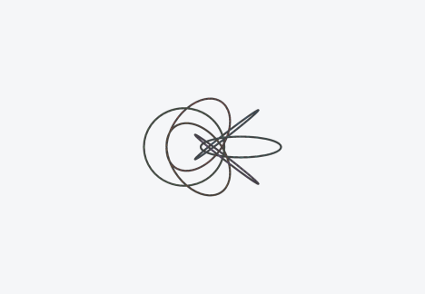
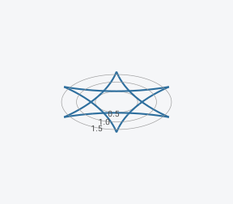
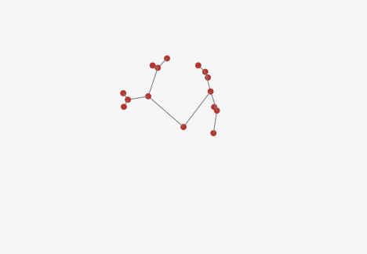
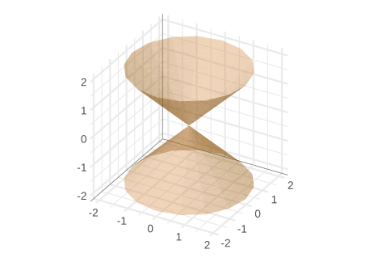
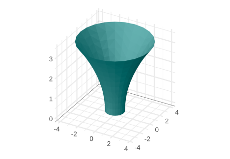
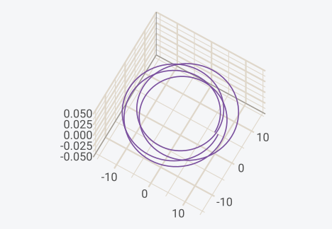

Ordinary plots assume flat space, where straight lines are the shortest paths and parallel lines never meet. Spherical and hyperbolic space curve in opposite directions, and spacetime adds a time axis with its own sign in the distance formula. This article draws data in each of them with coordinate systems that keep their own geometry: geodesics stay geodesics, and an isometry of the space moves the data without distorting it. Installation is covered in Get started. Inside the Thurston geometries renders the view from inside these spaces with the ray-marching backend.
Spherical geometry
The three-sphere is the set of points at unit distance from the
origin in four dimensions. coord_spherical_geometry_3d()
draws it through the stereographic chart, which sends great circles to
circles or lines, or the gnomonic chart, which sends them to straight
lines. An isometry such as rotate_4d() moves
the whole sphere. A square grid of segments drawn after a rotation that
mixes x and w bends into arcs, because the rotation moves the segments
off the great circles that the chart draws as straight lines.
along <- seq(-0.8, 0.8, length.out = 9)
steps <- seq(-0.8, 0.8, by = 0.4)
grid_lines <- rbind(
data.frame(x = rep(along, 5), y = rep(steps, each = 9), id = rep(1:5, each = 9)),
data.frame(x = rep(steps, each = 9), y = rep(along, 5), id = rep(6:10, each = 9)))
grid_lines$z <- 0
ggplot(grid_lines, aes(x, y, z = z, group = id)) +
geom_path_3d(colour = "#2E6F9E", linewidth = 0.8) +
coord_spherical_geometry_3d(isometry = rotate_4d("xw", 0.6), extent = 2)The Hopf fibration
The Hopf map sends every point of the three-sphere to a point of the
ordinary two-sphere, and the points that land on the same place form a
great circle, called a fibre. Fibres over distinct points never meet but
link each other once (Johnson 2011).
stat_hopf_fibre_3d() takes base points as lon
and lat and draws their fibres as tubes in the
stereographic chart. Six points on the equator give six linked
circles.
base <- data.frame(lon = seq(0, 300, by = 60), lat = 0, id = factor(1:6))
ggplot(base, aes(lon = lon, lat = lat, fill = id)) +
stat_hopf_fibre_3d(n = 48) +
scale_fill_manual(values = c("#2E6F9E", "#B5342B", "#3F7A3D",
"#9E5E0F", "#7A4F9E", "#2A7A7A"), guide = "none") +
coord_spherical_geometry_3d()
what = "base" draws the base points on the two-sphere,
and what = "torus" draws the torus formed by all the fibres
over one circle of latitude.
Hyperbolic space
Hyperbolic space has constant negative curvature: the circumference
of a circle grows exponentially with its radius.
coord_hyperbolic_3d() draws it in the Poincaré ball, where
the whole space fits inside a unit ball and geodesics are arcs that meet
the boundary at right angles. The six chords below join every second
corner of a hexagon; drawn as geodesics, they bow toward the centre of
the ball.
angle <- seq(0, 2 * pi, length.out = 7)[-7]
ends <- c(angle, angle[c(3:6, 1:2)])
chords <- data.frame(x = 0.7 * cos(ends), y = 0.7 * sin(ends),
id = rep(1:6, 2), z = 0)
ggplot(chords, aes(x, y, z = z, group = id)) +
geom_path_3d(colour = "#2E6F9E", linewidth = 1) +
coord_hyperbolic_3d(model = "poincare", extent = 1,
distance_breaks = c(0.5, 1, 1.5))
distance_breaks draws circles at the given hyperbolic
distances from the origin, so equal steps in distance appear ever closer
together toward the rim. inside = TRUE with an
observer renders the view from a point inside the
space.
Trees in hyperbolic space
The number of nodes in a balanced tree grows exponentially with
depth, as the volume of hyperbolic space does with radius, so trees
embed in hyperbolic space with little distortion (Munzner 1997; Sarkar 2011).
stat_tree_hyperbolic_3d() lays out a tree from an edge list
with from and to.
edges <- data.frame(from = c(1, 1, 2, 2, 3, 3, 4, 4, 5, 5, 6, 6, 7, 7),
to = 2:15)
ggplot(edges) +
stat_tree_hyperbolic_3d(colour = "grey50") +
stat_tree_hyperbolic_3d(what = "nodes", size = 3, colour = "#B5342B") +
coord_hyperbolic_3d(extent = 1)
hyperbolic_focus_3d() returns the hyperbolic
translations that bring a chosen point to the centre, one per frame, for
animate_3d(isometry = ), so a movie can move the focus
through the tree while every distance stays the same.
Spacetime and light cones
In Minkowski spacetime the squared interval between two events is
in units where the speed of light is 1. Events with
form the light cone of the origin. coord_spacetime_3d()
draws two space axes and time upward, and
stat_light_cone_3d() draws the cone or a surface of
constant interval.
ggplot() +
stat_light_cone_3d(extent = 2, n = 16, alpha = 0.4, fill = "#9E5E0F") +
coord_spacetime_3d()
interval = 1 with sheet = "future" draws
the hyperboloid of events at proper time 1 after the origin, which is a
model of hyperbolic space. lorentz_boost_3d() takes
rapidity, the inverse hyperbolic tangent of speed divided by the speed
of light. For a speed of 0.5 along x in these units, the event at rest
one unit after the origin moves to a time of
.
Black holes
The Schwarzschild solution describes spacetime around a mass
.
stat_embedding_3d() draws Flamm’s paraboloid, the
equatorial plane at one instant shaped so that distances along it are
true radial distances, outside the Schwarzschild radius rs
(Sadegh, Kiani and Nouri-Zonoz 2024).
ggplot() +
stat_embedding_3d(rs = 1, n = c(24, 12), fill = "#2A7A7A") +
coord_3d()
stat_geodesic_ode_3d() integrates the orbit of a test
particle in the equatorial plane for a given mass M,
angular momentum L and starting inverse radius
u0. The orbit below precesses: each pass closest to the
mass occurs at a later angle.
ggplot() +
stat_geodesic_ode_3d(M = 1, L = 4, u0 = 0.1, n = 300, colour = "#7A4F9E") +
coord_3d(elevation = 70)
References
Johnson, N. (2011). A visualization of the Hopf fibration. https://nilesjohnson.net/hopf.html
Munzner, T. (1997). H3: laying out large directed graphs in 3D hyperbolic space. https://graphics.stanford.edu/papers/h3/
Sadegh, M., Kiani, M. and Nouri-Zonoz, M. (2024). Embedding diagrams in stationary spacetimes. https://arxiv.org/abs/2308.03104
Sarkar, R. (2011). Low distortion Delaunay embedding of trees in hyperbolic plane. https://homepages.inf.ed.ac.uk/rsarkar/papers/HyperbolicDelaunayFull.pdf